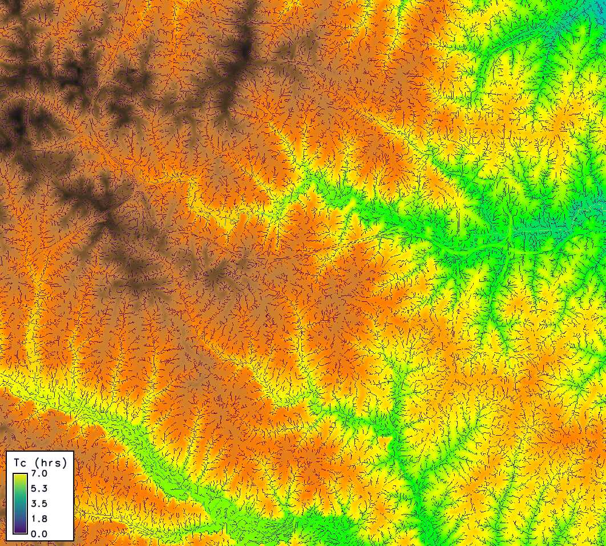

r.timeofconcentration generates a raster map of time of concentration (Tc) [h] for each cell, using the Kirpich equation based on the longest upstream flow-path length and path-average slope. This method, rooted in hydrologic practice, estimates how long it takes water to travel from the farthest point in a watershed to a given cell, aiding in runoff and flood analysis. The tool leverages elevation and flow direction data, optionally deriving streams if not provided, and supports diagnostic outputs like flow length and slope. All measurements use metric units ([m], [h]).
It simplifies water travel time estimation for high-level watershed planning: water flows downhill along paths defined by terrain, and Tc reflects the slowest route’s duration, influenced by distance and slope steepness. This is key for understanding how quickly runoff reaches streams or outlets.
elevation: Raster of elevation [m]. Required input to derive terrain slopes and flow paths.
direction: Flow-direction raster (GRASS-coded; from r.watershed or
r.stream.extract). Required to trace upstream flow paths; defines the
drainage network for accumulation.
streams: Stream raster and must be consistent with direction (i.e.,
produced from the same run of r.watershed or from r.stream.extract on the
same DEM).
outlets: Optional raster of outlet points; Tc is computed only at these cells (NULL elsewhere), respecting the current mask/region.
slope_min: Minimum path-average slope [unitless] (10^{-4} default).
Prevents division by zero on flat areas by setting a floor value.
length_min: Minimum upstream flow-path length [m] (10 default). Ensures Tc is reported only where flow paths are significant.
vertical_units: optional parameter that defines the vertical units of the
elevation raster. It accepts three values: meters, feet, or factor, and
defaults to meters. When vertical_units=meters, no conversion is applied.
When vertical_units=feet, elevation drops are multiplied by 1/3.28084 to
convert them to meters. When vertical_units=factor, the module multiplies
elevation drops by the user-supplied factor.
factor: Required only when vertical_units=factor. It must convert the
user’s vertical unit to meters (factor × <your vertical unit> = meters), and
the user is responsible for providing the correct factor.
output: A raster map of time of concentration per cell [h], computed using the Kirpich equation:
$$
T_c \;=\; \frac{K \cdot L^a \cdot S_{\text{avg}}^b}{60}
$$
where L is upstream flow-path length [m], S_{\text{avg}} is path-average
slope [unitless], K = 0.01947, a = 0.77, b = -0.385 are Kirpich
constants, and the result is converted from minutes to hours by dividing by 60.
Tc is NULL if L < length_min or outlets are undefined.
length: Optional output raster of longest upstream flow-path length per
cell [m], derived from r.stream.distance.
drop: Optional output raster of flow-path elevation drop per cell [m] (≥ 0), computed as the maximum elevation difference.
sbar: Optional raster of path-average slope per cell [unitless], calculated
as S_{\text{avg}} = \max(\frac{\Delta z}{L}, \text{slope}_\text{min}),
where \Delta z is the drop and L is the length.
r.stream.distance returns lengths in meters,
even if the CRS is geographic or projected (meters or feet).These examples use the North Carolina sample dataset.
Calculate time of concentration using r.watershed and r.timeofconcentration:
# set the region
g.region -p raster=elevation
# calculate positive flow accumulation and drainage directions using r.watershed
r.watershed -sa elevation=elevation drainage=fdr stream=str threshold=10
# compute the time of concentration
r.timeofconcentration elevation=elevation direction=fdr streams=str tc=tc_nc
# use length_min parameter for coarser tc on important streams only
r.timeofconcentration elevation=elevation direction=fdr streams=str tc=tc_nc_250 length_min=250
# if the vertical units of the DEM are in feet
r.timeofconcentration elevation=elevation vunits=feet dir=fdr str=str tc=tc
# if the vertical units of the DEM are in units other than meters or feet (e.g., cm)
r.timeofconcentration elevation=elevation vunits=factor factor=0.01 dir=fdr str=str tc=tc

r.timeofconcentration with length_min=250 on NC dataset zoomed near the
watershed outlet
Abdullah Azzam (HydroCS, Department of Civil and Environmental Engineering, New Mexico State University)